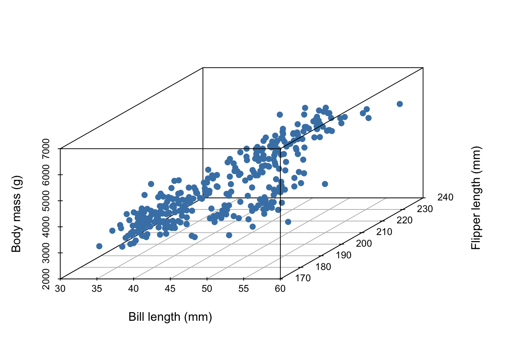
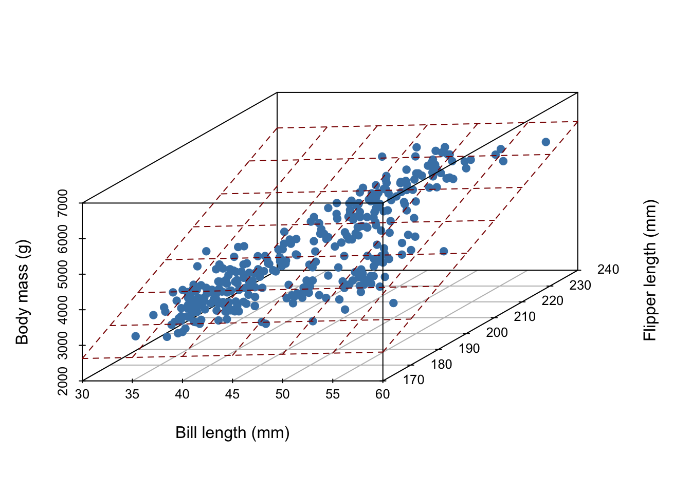

View libraries and data sets used in these notes
library(tidyverse)
library(palmerpenguins)
library(tidymodels)
library(scatterplot3d)
library(DT)Dr. Alexander Fisher
Imagine we’ve collected 3 measurements on a number of penguins:
Read more about the data here.
The first five entries of our data set are given below:
# A tibble: 5 × 3
body_mass_g bill_length_mm flipper_length_mm
<int> <dbl> <int>
1 3750 39.1 181
2 3800 39.5 186
3 3250 40.3 195
4 3450 36.7 193
5 3650 39.3 190In all, our data set contains the measurements of 342 penguins. Because we’ve collected three measurements, each individual penguin can be represented as a point in three dimensional space:

Now, imagine it’s hard to measure a penguin’s bodymass because it’s difficult to get them onto a scale. We wish to develop a linear model that uses bill length and flipper length to predict body mass,
\[ E[Y|X] = X \beta, \]
where
What does our linear model look like?

In general, for \(D\) measurements, a linear model is a \(D-1\) dimensional hyperplane!
To “fit” a (multiple) linear regression model means finding \(\hat{\beta}\) that defines the “best” hyperplane. Here, “best” means that \(\hat{\beta}\) is the optimal solution of some objective function.
Write down the mathematical formula for linear regression where penguin bodymass is the outcome variable and flipper length, bill length, and sex of the penguin are the covariates. Note the dimension of each symbol in your model.
\[ \boldsymbol{y}= \boldsymbol{X}\beta + \boldsymbol{\varepsilon} \]
As usual,
but here \(p = 4\) (3 covariates + intercept).
\[ \boldsymbol{X}= \begin{bmatrix} \vdots & \vdots & \vdots & \vdots \\ \mathbf{1} & \mathbf{x}_1 & \mathbf{x}_2 & \mathbf{x}_3 \\ \vdots & \vdots & \vdots & \vdots \end{bmatrix} \]
Question: Why is sex (a categorical predictor) represented as 1 column and not 2?
Answer: It would create a linearly dependent column in the matrix \(\boldsymbol{X}\), then \(\boldsymbol{X}^T \boldsymbol{X}\) would be rank deficient and could not be inverted.
Question: Suppose we add the covariate “island”, what is the new dimension of \(\boldsymbol{X}\) and \(\beta\) then?
Answer: Island is categorical with three states, therefore we would need 2 predictors to represent it. Now \(p = 6\) and \(\boldsymbol{X}\in \mathbb{R}^{n \times 6}\) and \(\beta \in \mathbb{R}^6\).
The formula for the least squares estimator \(\hat{\beta}_{OLS}\) is the same,
\[ \hat{\beta}_{OLS} = \left(\boldsymbol{X}^T \boldsymbol{X}\right)^{-1} \boldsymbol{X}^T \boldsymbol{y} \]
penguin_fit <- lm(body_mass_g ~ flipper_length_mm + bill_length_mm + sex + island, data = penguins)
penguin_fit
Call:
lm(formula = body_mass_g ~ flipper_length_mm + bill_length_mm +
sex + island, data = penguins)
Coefficients:
(Intercept) flipper_length_mm bill_length_mm sexmale
-3629.563 37.638 5.808 390.055
islandDream islandTorgersen
-376.124 -288.380 Question: Why didn’t I have to specify an intercept?
Answer: lm includes intercept by default.
Question: What if I don’t want an intercept?
Answer: Use + 0, like this: lm(y ~ x1 + x2 + ... + x_5 + 0, data = penguin). This will tell lm not to exclude an intercept term from the model.
yX <- penguins %>%
select(c("body_mass_g", "bill_length_mm", "flipper_length_mm",
"sex", "island")) %>%
mutate(isMale = ifelse(sex == "male", 1, 0), ## create 1 dummy variable
isDream = ifelse(island == "Dream", 1, 0), ## create other 2 dummy variables
isTorgersen = ifelse(island == "Torgersen", 1, 0)) %>%
select(-c(island, sex)) %>% ## remove redundant columns
mutate(one = 1) %>% # create vector of ones
drop_na() %>% # drop NAs, just like the lm() function does by default
as.matrix() # turn into a matrix for matrix algebra in R
y <- yX[,1] # grab first column (which was the outcome variable)
X <- yX[,-1] # grab all but first column (X matrix)
betaHat <- solve(t(X) %*% X) %*% t(X) %*% y
betaHat [,1]
bill_length_mm 5.808086
flipper_length_mm 37.637788
isMale 390.055414
isDream -376.124225
isTorgersen -288.380366
one -3629.562552An alternative, easy way to grab \(X\) quickly:
X = model.matrix( body_mass_g ~ flipper_length_mm + bill_length_mm + sex + island,
data = penguins)
X %>%
head(n = 10) # notice NAs are dropped by default, (see the row number skips) (Intercept) flipper_length_mm bill_length_mm sexmale islandDream
1 1 181 39.1 1 0
2 1 186 39.5 0 0
3 1 195 40.3 0 0
5 1 193 36.7 0 0
6 1 190 39.3 1 0
7 1 181 38.9 0 0
8 1 195 39.2 1 0
13 1 182 41.1 0 0
14 1 191 38.6 1 0
15 1 198 34.6 1 0
islandTorgersen
1 1
2 1
3 1
5 1
6 1
7 1
8 1
13 1
14 1
15 1We interpret slopes \(\hat{\beta}_j\) as the expected change in the mean of \(Y\) when \(X_j\) increases by one unit, holding the value of all other predictor variables constant.
For example, for each additional mm of flipper length a given penguin has, we expect their body mass to increase by 37.6 grams holding all other covariates constant.
The intercept is the expected value of \(Y\) when all predictors are zero. Note: when there is a categorical predictor, this corresponds to some “default” category.
We can still make predictions in R; now we require more covariates. For example:
new_penguin <- tibble(
flipper_length_mm = 180,
bill_length_mm = 40,
sex = "male",
island = "Dream"
)
cat("The predicted body mass of the new penguin is:\n")The predicted body mass of the new penguin is: 1
3391.494 Regression shows association not causality.